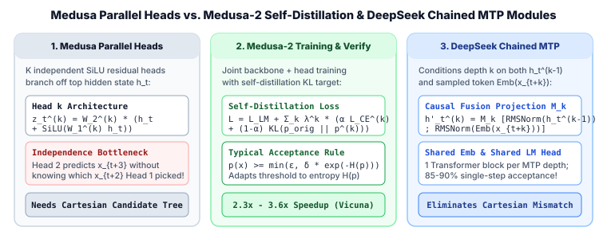

1. Multi-Head & Multi-Token Prediction: Medusa, Medusa-2 Self-Distillation & DeepSeek-V3/R1 MTP
Classic draft–target speculative decoding (Module 1) requires hosting, memory-managing, and serving two distinct language models that share an identical tokenizer. In distributed Tensor-Parallel (TP) or Expert-Parallel (EP) deployments (such as DeepSeek-V3/R1 with 671B parameters across 64 GPUs), a small standalone draft model often becomes an engineering bottleneck: either it is under-sharded (wasting GPU cores) or over-sharded (dominated by AllReduce communication latency), and maintaining two separate paged KV caches fragments high-bandwidth memory.
Single-model multi-head architectures eliminate the external draft model altogether by attaching lightweight auxiliary prediction heads directly onto the target model's hidden states. In this chapter we dissect the evolution from Medusa (Cai et al., ICML 2024) to DeepSeek-V3 / R1 Multi-Token Prediction (MTP) (DeepSeek-AI, 2024), proving why parallel independent heads suffer from joint-token incompatibility and how DeepSeek's chained causal MTP modules solve it.

1. Medusa: Parallel Residual MLP Heads on Top of $h_t$
Let $h_t \in \mathbb{R}^d$ denote the final-layer hidden state of the target Transformer at token position $t$. Standard autoregressive decoding computes next-token logits $z_t^{(0)} = W_{\text{LM}} h_t \in \mathbb{R}^{|V|}$ to predict token $x_{t+1}$.
Medusa augments the model with $K$ lightweight feed-forward heads (typically $K = 4$ or $5$), where the $k$-th Medusa head predicts the token at offset $t + k + 1$ directly from the same hidden state $h_t$ via a single residual SiLU block followed by a dedicated unembedding projection $W_{2}^{(k)} \in \mathbb{R}^{|V| \times d}$:
Here $W_{1}^{(k)} \in \mathbb{R}^{d \times d}$ is initialized to zero so that at initialization, $h_t + \operatorname{SiLU}(W_{1}^{(k)} h_t) = h_t$, and $W_{2}^{(k)}$ is initialized as a copy of the base model's LM head $W_{\text{LM}}$.
The Marginal vs. Joint Distribution Bottleneck ("Cartesian Mismatch")
Because all $K$ Medusa heads read only $h_t$ (which encodes context $x_{\le t}$) and never see which token $x_{t+1}$ was actually sampled from the base LM head, Head $k$ learns the marginal distribution over $k$-step paths rather than the conditional distribution given $x_{t+1}, \dots, x_{t+k}$:
Concrete Failure Mode: Suppose after the prefix "I live in New", the target model places $50\%$ probability on the two-word phrase "York City" and $50\%$ probability on "Jersey Shore":
- The base LM head ($t+1$) assigns $p^{(0)}(\texttt{"York"}) = 0.50$ and $p^{(0)}(\texttt{"Jersey"}) = 0.50$.
- Medusa Head 1 ($t+2$), knowing only
"I live in New", assigns $p^{(1)}(\texttt{"City"}) = 0.50$ and $p^{(1)}(\texttt{"Shore"}) = 0.50$. - If we take only a single greedy draft sequence $(x_{t+1}, x_{t+2})$, an arbitrary tie-break can easily pair
"York"with"Shore"($\to$"New York Shore", which has $0\%$ target probability!) or"Jersey"with"City".
To overcome this marginal independence, Medusa extracts the top-$s_k$ candidates from each head $k$ and forms their Cartesian product tree (pruned to the $M \approx 64$ highest-scoring calibration paths), verifying all $M$ branches simultaneously in one target pass via tree attention (Module 3, Chapter 1).
2. Medusa-1 vs. Medusa-2: Self-Distillation & Typical Acceptance
Medusa offers two training recipes depending on your compute budget and access to the base model's training distribution:
- Medusa-1 (Frozen Backbone): Freezes all base Transformer weights $\theta_{\text{base}}$ and trains only the $K$ Medusa heads on a small SFT corpus using cross-entropy loss weighted by exponential decay $\lambda_k = 0.8^k$:
$$\mathcal{L}_{\text{Medusa-1}} = \sum_{k=1}^{K} \lambda_k \cdot \big(-\log p_t^{(k)}(x_{t+k+1})\big).$$Because the backbone is frozen, Medusa-1 is guaranteed never to degrade the base model's perplexity and can be trained in a few hours on a single GPU using LoRA/QLoRA.
- Medusa-2 (Joint Training with Self-Distillation): Unfreezes the backbone together with the heads. To prevent uninitialized head gradients from corrupting the pretrained backbone, Medusa-2 uses (a) a two-stage warmup (train heads first, then joint fine-tuning), (b) separate optimizer learning rates ($\eta_{\text{backbone}} \ll \eta_{\text{heads}}$), and (c) a self-distillation KL loss against a frozen reference copy $p_{\text{orig}}^{(0)}$ of the base model:
$$\mathcal{L}_{\text{Medusa-2}} = D_{\text{KL}}\!\big(p_{\text{orig}, t}^{(0)} \,\big\|\, p_t^{(0)}\big) + \sum_{k=1}^{K} \lambda_k \Big[\alpha_{\text{sd}} \mathcal{L}_{\text{CE}}^{(k)} + (1 - \alpha_{\text{sd}}) D_{\text{KL}}\!\big(p_{\text{orig}, t+k}^{(0)} \,\big\|\, p_t^{(k)}\big)\Big].$$
Typical Acceptance for Higher-Temperature Decoding
Because Medusa heads output marginal approximations rather than calibrated conditional draft probabilities $q(x_{t+k} \mid x_{<t+k})$, standard rejection sampling at temperature $\tau > 0$ can be overly conservative. Medusa introduces an optional Typical Acceptance scheme inspired by Locally Typical Sampling: given the target distribution $p(v)$ at a candidate node with Shannon entropy $H(p) = -\sum_{v} p(v) \log p(v)$, a candidate token $x_k$ is accepted if its target probability exceeds an entropy-adaptive threshold:
When the target distribution is peaked (low entropy $H(p) \approx 0$), $\delta \exp(-H(p)) \approx 0.30$ is high, enforcing strict agreement with the mode; when the target distribution is flat (high entropy $H(p)$), the threshold drops to $\varepsilon = 0.09$, accepting any plausible continuation.
3. DeepSeek-V3 & DeepSeek-R1 Multi-Token Prediction (MTP)
Whereas Gloeckle et al. (Meta AI, 2024) proposed parallel multi-token prediction heads primarily as a pretraining auxiliary loss, DeepSeek-V3 and DeepSeek-R1 re-engineered Multi-Token Prediction (MTP) by making the prediction heads sequentially causal across depths $k = 1, \dots, D$.
Instead of predicting $x_{t+k+1}$ from $h_t$ alone, DeepSeek's $k$-th MTP module explicitly ingests both (1) the representation $h_t^{(k-1)} \in \mathbb{R}^d$ from the previous depth ($h_t^{(0)}$ being the main Transformer's final hidden state) and (2) the token embedding $\operatorname{Emb}(x_{t+k}) \in \mathbb{R}^d$ of the token at offset $t+k$:
This fused vector $h_t^{\prime(k)}$ is then passed through a single dedicated Transformer decoder block $\operatorname{TRM}_k$ followed by the shared main-model output head $W_{\text{LM}}$:
- Zero vocabulary-matrix duplication: For a large vocabulary ($|V| = 129{,}280$ in DeepSeek-V3 with $d = 7168$), a single unshared LM head $W_2^{(k)} \in \mathbb{R}^{|V| \times d}$ costs $926\text{M}$ parameters! By sharing both $\operatorname{Emb}(\cdot)$ and $W_{\text{LM}}$ with the main backbone, each DeepSeek MTP module adds only one Transformer layer plus $M_k \in \mathbb{R}^{d \times 2d}$.
- True conditional drafting: At inference time, the main model samples $\hat x_{t+1} \sim p_t^{(0)}$. That exact sampled token ID $\hat x_{t+1}$ is embedded and concatenated with $h_t^{(0)}$ into MTP Module 1 to predict $\hat x_{t+2}$, completely eliminating Cartesian mismatch ($85\%\text{--}90\%$ acceptance rate on DeepSeek-V3/R1).
4. Worked Numerical Comparison: Parallel Medusa vs. Chained MTP
Return to our prefix $x_{\le t} = \texttt{"I live in New"}$, where the true target language model places probability $0.50$ on $(\texttt{"York"}, \texttt{"City"})$ and $0.50$ on $(\texttt{"Jersey"}, \texttt{"Shore"})$, with $0.00$ on cross-combinations:
| Architecture | Step 1 Proposal $\hat x_{t+1}$ | Step 2 Head Input | Step 2 Distribution $p^{(1)}(x_{t+2})$ | Single-Path Draft $(\hat x_{t+1}, \hat x_{t+2})$ Acceptance |
|---|---|---|---|---|
| Medusa (Parallel MLP) | $\hat x_{t+1} = \texttt{"York"}$ ($p=0.50$) | $h_t$ only (blind to $\hat x_{t+1}$) | $0.50\,\texttt{"City"} + 0.50\,\texttt{"Shore"}$ | $50\%$ chance of drafting invalid "York Shore" ($\alpha_2 = 0.50$) |
| Medusa + Tree ($2 \times 2$) | Top-2: $\{\texttt{"York"}, \texttt{"Jersey"}\}$ | $h_t$ only (builds $4$ tree paths) | Verifies all $4$ Cartesian pairs in 1 pass | $100\%$ acceptance, but costs $4$ tree verification tokens |
| DeepSeek Chained MTP | $\hat x_{t+1} = \texttt{"York"}$ ($p=0.50$) | $M_1[\operatorname{Norm}(h_t);\, \operatorname{Norm}(e(\texttt{"York"}))]$ | $1.00\,\texttt{"City"} + 0.00\,\texttt{"Shore"}$ | $100\%$ acceptance on a single linear path! ($\alpha_2 = 1.00$) |
5. Reference PyTorch Implementation: Medusa Head & DeepSeek MTP Module
import torch
import torch.nn as nn
import torch.nn.functional as F
class MedusaResidualHead(nn.Module):
"""Medusa parallel head: SiLU residual block + dedicated vocabulary projection."""
def __init__(self, hidden_dim: int, vocab_size: int):
super().__init__()
self.linear = nn.Linear(hidden_dim, hidden_dim)
self.lm_head = nn.Linear(hidden_dim, vocab_size, bias=False)
# Zero-init residual layer so head starts as identity + base lm_head
nn.init.zeros_(self.linear.weight)
nn.init.zeros_(self.linear.bias)
def forward(self, h_t: torch.Tensor) -> torch.Tensor:
return self.lm_head(h_t + F.silu(self.linear(h_t)))
class DeepSeekMTPModule(nn.Module):
"""
DeepSeek-V3/R1 Chained Multi-Token Prediction (MTP) Module for depth k.
Shares token_emb and shared_lm_head with the main backbone.
"""
def __init__(self, hidden_dim: int, num_heads: int = 8):
super().__init__()
self.norm_h = nn.RMSNorm(hidden_dim)
self.norm_emb = nn.RMSNorm(hidden_dim)
self.proj_m = nn.Linear(2 * hidden_dim, hidden_dim, bias=False)
self.trm_block = nn.TransformerEncoderLayer(
d_model=hidden_dim, nhead=num_heads, dim_feedforward=4 * hidden_dim,
batch_first=True, norm_first=True
)
def forward(
self,
h_prev: torch.Tensor, # (B, L, d) from depth k-1
next_token_ids: torch.Tensor, # (B, L) token IDs at offset t+k
shared_emb: nn.Embedding,
shared_lm_head: nn.Linear,
) -> tuple[torch.Tensor, torch.Tensor]:
tok_emb = shared_emb(next_token_ids)
fused = torch.cat([self.norm_h(h_prev), self.norm_emb(tok_emb)], dim=-1)
h_prime = self.proj_m(fused)
L = h_prime.size(1)
causal_mask = nn.Transformer.generate_square_subsequent_mask(L, device=h_prime.device)
h_k = self.trm_block(h_prime, src_mask=causal_mask, is_causal=True)
logits_k = shared_lm_head(h_k)
return h_k, logits_k
if __name__ == "__main__":
torch.manual_seed(0)
B, L, d, V = 1, 4, 64, 500
shared_emb = nn.Embedding(V, d)
shared_lm_head = nn.Linear(d, V, bias=False)
mtp1 = DeepSeekMTPModule(hidden_dim=d, num_heads=4)
h_main = torch.randn(B, L, d)
sampled_t_plus_1 = torch.randint(0, V, (B, L))
h_1, logits_t_plus_2 = mtp1(h_main, sampled_t_plus_1, shared_emb, shared_lm_head)
print("Main hidden shape :", tuple(h_main.shape))
print("MTP-1 hidden shape:", tuple(h_1.shape))
print("MTP-1 logits shape:", tuple(logits_t_plus_2.shape))6. Primary References
- Tianle Cai et al., Medusa: Simple LLM Inference Acceleration Framework with Multiple Decoding Heads (ICML 2024).
- DeepSeek-AI, DeepSeek-V3 Technical Report (Section 2.2: Multi-Token Prediction, December 2024).
- Fabian Gloeckle et al., Better & Faster Large Language Models via Multi-token Prediction (ICML 2024).